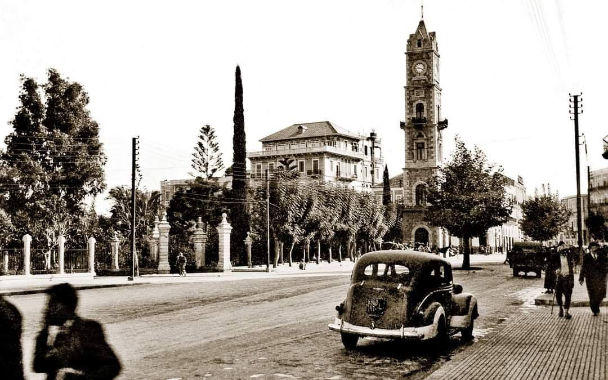

تعتبر طرابلس ثاني أكبر مدينة في لبنان بعد العاصمة بيروت، وهي عاصمة محافظة الشمال. تتمتع المدينة بتاريخ عريق يمتد لأكثر من 3500 عام، حيث شهدت حقبات مختلفة من الحضارات والإمبراطوريات التي تركت بصماتها على المدينة حتى اليوم.
أسس الفينيقيون مدينة طرابلس في الألفية الثانية قبل الميلاد كواحدة من المدن المهمة في شبكتهم التجارية البحرية الواسعة. كانت تعرف باسم "أثل" أو "أثلو" في النصوص الفينيقية القديمة. ازدهرت المدينة كميناء تجاري مهم ومركز لصناعة السفن والأصباغ الأرجوانية.
خضعت طرابلس للحكم الفارسي بعد سقوط الإمبراطورية البابلية. أصبحت المدينة جزءاً من المقاطعة الفارسية الخامسة. ازدهرت التجارة خلال هذه الفترة حيث كانت طرابلس نقطة وصل بين الإمبراطورية الفارسية ودول البحر المتوسط.
بعد فتح الإسكندر الأكبر للمنطقة، دخلت طرابلس في العصر الهيليني. أعيد تأسيس المدينة وفق التخطيط اليوناني وأصبحت تعرف باسم "تريبوليس" (أي المدن الثلاث) لأنها كانت تتألف من ثلاث مدن منفصلة تم توحيدها. ازدهرت الثقافة اليونانية وانتشرت اللغة اليونانية كلغة رسمية.
تحولت طرابلس إلى مدينة رومانية مهمة في عهد بومبيوس الكبير. تم بناء العديد من المعالم الرومانية مثل الحمامات والمسارح والمعابد. أصبحت المدينة مركزاً تجارياً مهماً في الإمبراطورية الرومانية واشتهرت بصناعة الزجاج والأرجوان.
بعد تقسيم الإمبراطورية الرومانية، أصبحت طرابلس جزءاً من الإمبراطورية البيزنطية. تحولت المدينة إلى مركز مسيحي مهم وتم بناء العديد من الكنائس والأديرة. تعرضت المدينة لزلازل مدمرة في القرن السادس الميلادي أعادت تشكيل معالمها.
فتح المسلمون طرابلس عام 636 م بقيادة القائد شرحبيل بن حسنة. تحولت المدينة إلى مركز إسلامي مهم تحت حكم الأمويين ثم العباسيين. ازدهرت العلوم والفنون الإسلامية وتم بناء المساجد والمدارس. أصبحت طرابلس ميناءً مهماً للدولة الإسلامية.
سيطر الفاطميون على طرابلس وجعلوها مركزاً لنشر المذهب الشيعي الإسماعيلي. تم بناء قصر الحكم الفاطمي وازدهرت الصناعات مثل صناعة الورق والنسيج. كانت طرابلس في هذه الفترة منافسة قوية للقاهرة عاصمة الفاطميين.
سقطت طرابلس بيد الصليبيين عام 1109 بعد حصار دام خمس سنوات. أصبحت عاصمة لمقاطعة طرابلس الصليبية. تم بناء القلعة الشهيرة (قلعة ريمون دي سان جيل) وكاتدرائية سانت ماري. شهدت المدينة صراعات دائمة بين الصليبيين والقوات الإسلامية.
حرر المماليك طرابلس من الصليبيين عام 1289 بقيادة السلطان قلاوون. دمرت المدينة بالكامل ثم أعيد بناؤها وفق التخطيط الإسلامي. تم بناء المدارس المملوكية مثل المدرسة النورية والمساجد مثل الجامع المنصوري الكبير. أصبحت طرابلس مركزاً علمياً وتجارياً مهماً.
بعد معركة مرج دابق عام 1516، دخلت طرابلس تحت الحكم العثماني. تم تعيين المدينة كعاصمة لولاية طرابلس الشام التي شملت معظم سوريا ولبنان الحالية. شهدت المدينة ازدهاراً اقتصادياً كبيراً في القرنين السادس عشر والسابع عشر حيث أصبحت مركزاً لتجارة الحرير والصابون.
ترك العثمانيون العديد من المعالم في طرابلس مثل:
بعد سقوط الدولة العثمانية في الحرب العالمية الأولى، خضعت طرابلس للانتداب الفرنسي على لبنان. تم فصل المدينة عن سوريا وأصبحت جزءاً من لبنان الكبير الذي أعلنه الفرنسيون عام 1920. شهدت المدينة بعض التطورات العمرانية والخدمية ولكنها ظلت تعاني من التهميش مقارنة ببيروت.
بعد استقلال لبنان عام 1943، أصبحت طرابلس ثاني أكبر مدينة في البلاد. شهدت المدينة تطوراً عمرانياً واقتصادياً في الخمسينيات والستينيات، لكنها عانت من التهميش السياسي والاقتصادي.
كانت طرابلس مسرحاً للعديد من الأحداث الدامية خلال الحرب الأهلية، خاصة الصراعات بين الفصائل الفلسطينية والقوات السورية والجماعات اللبنانية. دمرت أجزاء كبيرة من المدينة القديمة وتعرضت للقصف المتكرر.
بعد انتهاء الحرب الأهلية، بدأت عملية إعادة إعمار بطيئة لطرابلس. تواجه المدينة اليوم العديد من التحديات الاقتصادية والاجتماعية، لكنها تحتفظ بأهميتها الثقافية والتاريخية كلؤلؤة البحر المتوسط.